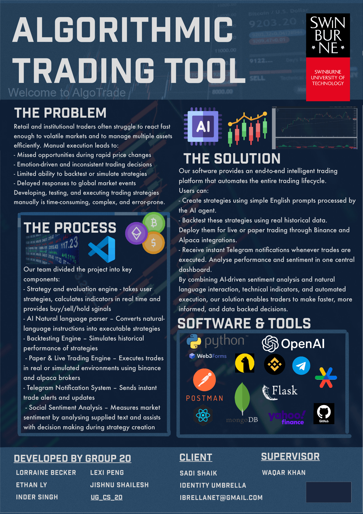
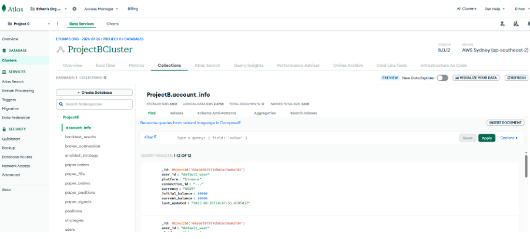
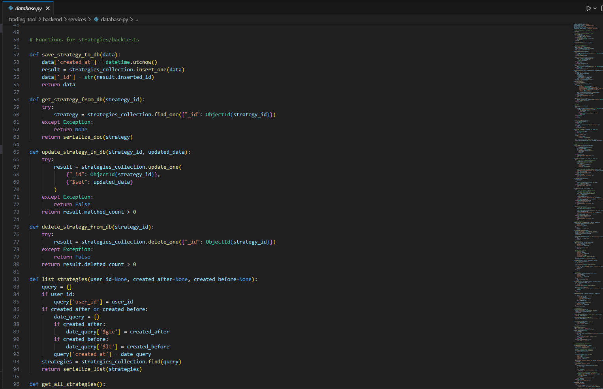
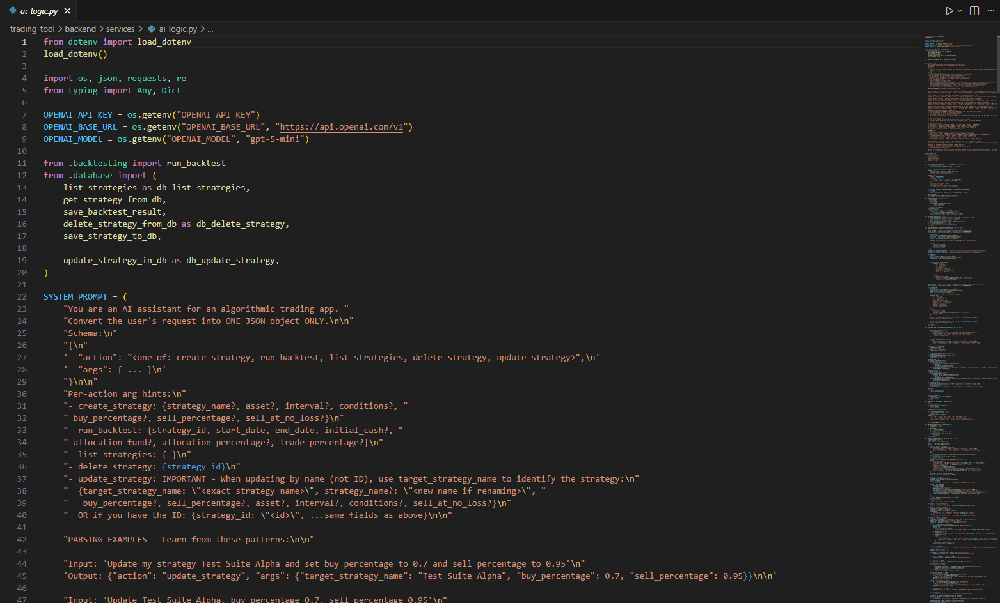
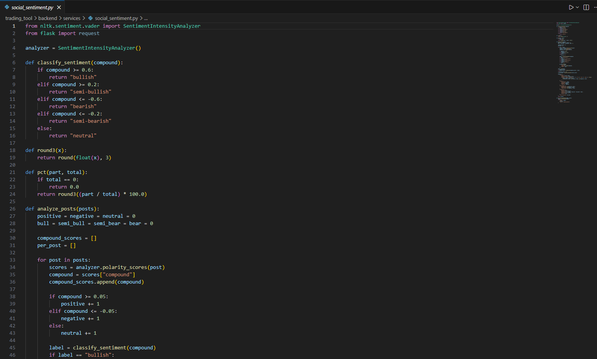

Algorithmic Trading Tool (Algotrade)

About the Project
This project is a trading web application that allows users to execute trades, as well as provide trade-related information and assistance. The project was completed in Agile method with weekly client meetings online. Features include real-time stock and crypto tracking and custom strategy execution.
My Role
In this project I was chosen as the Project Leader for a team of five. Tasks include managing the team, communicating with client, and completing technical work. I primarily worked on the backend engineering the database, and adding features to the application.
Key Contributions
Database Schema & Implementation
To support the trading logic, I implemented a non-relational schema that handles high-frequency data updates and user strategy storage efficiently.

A view of the MongoDB Atlas database structure and collections.
Database Engineering (Python & MongoDB)
I designed the cloud-based database architecture using MongoDB Atlas. I developed a suite of Python functions for real-time data manipulation, routing, and rigorous testing to ensure data integrity during trades.

Demo showing the AI Agent processing natural language prompts to manage trades.
AI Agent Demonstration
The AI Agent acts as an intermediary, allowing users to interact with complex trading strategies without needing to understand the underlying code.
The AI Agent in action, executing a user command via natural language.
AI Integration Logic
I integrated the OpenAI API to allow users to manage trading strategies via natural language. Users can create, update, or delete strategies through simple prompts—a feature the client highlighted as their favorite.

The Python logic and routing used to connect the OpenAI API to our strategy database.
Social Sentiment Demo
This demonstration shows how the application pulls live data to provide immediate market feedback to the user.
Demonstration of real-time sentiment scoring from live social media feeds.
Social Sentiment Analysis Code
I built a sentiment engine using NLTK's VADER library. It evaluates X (Twitter) posts to calculate sentiment scores, categorizing assets as Bullish, Bearish, or Neutral to help users make informed decisions.

The implementation of the VADER SentimentIntensityAnalyzer within our backend pipeline.